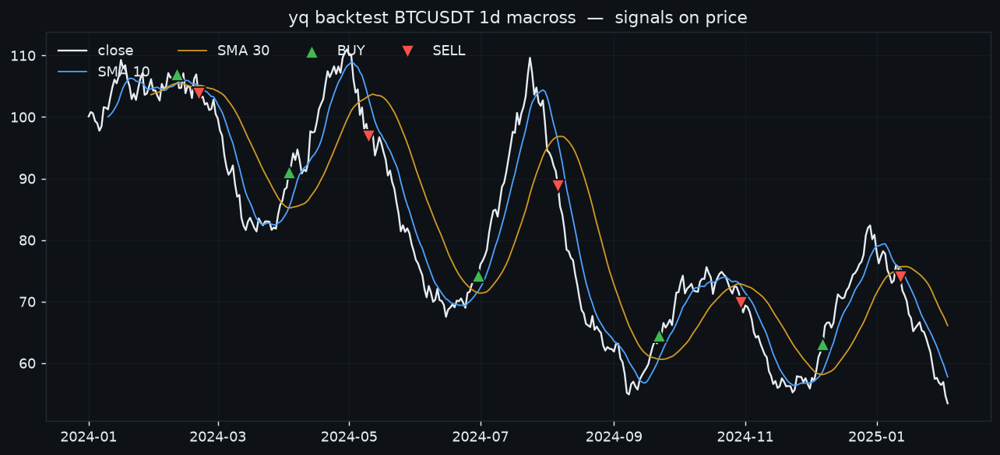

YammyQuant¶
An agentic quant research cockpit. Claude Code is the operator — it drives a
CLI toolbelt over the yammyquant library to collect data, backtest, train RL
agents, generate signals, and run a paper/live portfolio. A web dashboard lets
you watch everything live and leave instructions.
No paid LLM API in the loop
The brain is your Claude Code session. The dashboard is the cockpit; the conversation happens in Claude Code. Nothing here calls a paid inference API.
New here? Start with the Tutorial
A hands-on, end-to-end walkthrough — collect → research → backtest → ensemble
→ signal → risk → trade → automate, every step a real yq command.

-
Install, collect candles, run a backtest, launch the cockpit.
-
Every
yqcommand, grouped by what you're doing. -
Keyless news, DART disclosures, fundamentals, sentiment, research briefs.
-
Where an ephemeral agent keeps what survives a session — and
yq recall.
How it works¶
One operator, one shared brain-state, two surfaces (CLI + dashboard):
Claude Code (operator) ──drives──▶ yq CLI toolbelt
│ │
│ reads instructions │ writes state + logs activity
▼ ▼
┌────────────────── shared state ──────────────────┐
│ SQLite (positions, trades, equity, signals, news, │
│ journal, instruction inbox) + DuckDB candles │
└──────────────────────────┬──────────────────────────┘
▼
FastAPI cockpit + SPA dashboard
(charts · positions · trade approvals · inbox · news)
The operator loop¶
- Recall first — you're ephemeral, so reload memory before acting:
yq recall(most-salient notes + unread inbox + open positions). - Do the work with the toolbelt. Every command logs to shared state, so the dashboard updates live.
- Record decisions as trades (paper by default; live orders queue for human approval) and as journal entries for the next session.
From idea to live, with the same costs at every stage¶
The pipeline is backtest → paper → live, and execution realism carries through all three so a result that survives one stage is meaningful at the next:
- Per-exchange fees. Pick a venue and its real maker/taker schedule is applied
automatically —
yq backtest … --fee-exchange binance, paper trades throughTradeManager(exchange=…), and live reads the account's fee tier from the API. You never hand-set fees. - Live prices for paper. Paper trades fill at the exchange's real-time price
(not the last candle close) and incur a configurable
slippage— so paper mirrors live execution, not an idealized fill. - Session-aware data.
yq integrity --sessionsknows stocks close overnight and on weekends (crypto is 24h), so it flags only genuine intraday gaps.
Why it's different¶
Compared to freqtrade / Jesse / NautilusTrader and the LLM-agent repos (ai-hedge-fund, TradingAgents, FinRobot), YammyQuant ships the risk layer, optimization/walk-forward, multi-exchange data, and an information layer — yet its agentic operator is your Claude Code session, so it needs no paid LLM API. See the benchmark.